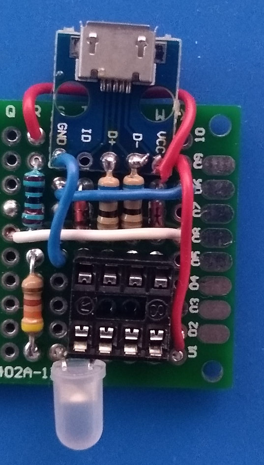

ATTiny85 und Micronucleus Bootloader

Nachdem ich festgestellt habe, dass es auch mir möglich ist, ein einfaches Custom Keyboard selbst zu bauen und bereits mit dem Entwurf einer entsprechenden Schaltung begonnen hatte, wollte ich von der Bastellösung mit dem Digispark wegkommen
Dazu war es nötig, einen ATTiny85 zu beschaffen und mit der benötigten Infrastruktur zu verbinden, die letztendlich das Interface zu USB möglich macht - denn der Charme einer solchen Lösung besteht (jedenfalls für mich) ja darin, dass man einer USB-Tastatur einfach via USB eine neue Firmware verpassen kann. Ideen gibt es dazu im Internet genug - allerdings muss man einen ATTiny85 aus dem Regal erst einmal in die Lage versetzen, sich über USB flashen zu lassen. Dazu existiert (sicher gibt es noch andere Möglichkeiten) zum Beispiel der Micronucleus-Bootloader.
Den muss man allerdings erst einmal auf den ATTiny aufbringen. Es existiert in den Arduino-Beispielen ein Sketch namens ArduinoISP - mit diesem wird ein Arduino zu einem ISP-Programmer für andere Mikroprozessoren - genau das, was wir hier brauchten!
Nach einigen Experimenten und dem Kondensieren einiger Anleitungen in ein Best-of stellte sich für mich folgende Kommandozeile als die funktionierende heraus:
avrdude -C ../etc/avrdude.conf -v -pattiny85 -cstk500v1 -P /dev/ttyUSB0 -b 19200 -U flash:w:ATtiny85-Boot-loader-main/ATtiny85.hex:i -U lfuse:w:0xe1:m -U hfuse:w:0xdd:m -U efuse:w:0xfe:m
Man muss dazu natürlich im Verzeichnis hardware/tools/avr/bin des Arduino-Verzeichnisses stehen und gegebenenfalls den Pfad zur hex-Datei anpassen.
Nachdem der Programmiervorgang abgeschlossen ist, kann man den ATTiny auch über USB flashen wie einen beliebigen Digispark(-Clone).
Da ich immer Wert auf schnelle Erfolge lege habe ich die entsprechende Schaltung auf einem Steckbrett aufgebaut - keine gute Idee: Ich habe immer wieder mit Problemen verschiedenster Art zu kämpfen gehabt, darunter war das simple nicht Erkennen des Devices noch das harmloseste: Während meiner Experimente sah ich tatsächlich (obwohl über einen USB-Hub angeschlossen) in dmesg auch einmal die Meldung Overcurrent, was wiederum zum Abschalten des Ports führte. Glücklicherweise ergab sich daraus keine dauerhafte Schädigung des Mainboards. Vor ein, zwei Generationen hätte das wahrscheinlich noch anders ausgesehen...
Ich konnte aber mit meinem Steckbrett-Aufbau hin und wieder erfolgreich flashen - damit konnte es zur nächsten Etappe weitergehen: einen etwas permanenteren Aufbau auf einem Stück Universalleiterplatte zu realisieren und zu prüfen, ob mein Verdacht - dass die Unzuverlässigkeit am Steckbrett-Aufbau lag - zu verifizieren.
Nachdem ich einen Fehler in der Schaltung gefunden und behoben hatte konnte ich voller Freude feststellen, dass mein Verdacht richtig war: Der Aufbau auf der Universalleiterplatte zeigte keine der zuvor beobachteten Macken mehr und funktionierte zuverlässig jedes Mal! Hier ein Bild dieses Aufbaus - ich konnte mich natürlich nicht beherrschen und habe die eigentlich nicht benötigte Blink-LED und den zugehörigen Vorwiderstand auch gleich mit eingebaut:

Aufbau eines ATTiny85 mit USB-Interface auf Universalleiterplatte


Vor 5 Jahren hier im Blog
-
Virtuelles Netzwerklabor
11.01.2017
Nachdem ich hin und wieder vor der Herausforderung stehe, Anwendungen unter realen Netzwerkbedingungen zu testen, habe ich bereits vor längerer Zeit begonnen, ein virtuelles Netzwerklabor aufzubauen...
Weiterlesen...
Tags
Android Basteln C und C++ Chaos Datenbanken Docker dWb+ ESP Wifi Garten Geo Git(lab|hub) Go GUI Hardware Java Jupyter Komponenten Links Linux Markup Music Numerik PKI-X.509-CA Python QBrowser Rants Raspi Revisited Security Software-Test sQLshell TeleGrafana Verschiedenes Video Virtualisierung Windows Upcoming...
Neueste Artikel
-
Stratum-1-NTP-Server Links
Ich habe meinen eigenen Stratum-1-NTP-Server mittels eines GPS-Empfängers, einer Adapterschaltung und einem Raspi gebaut. Hier fasse ich einige nützliche Links zu diesem Themengebiet zusammen
Weiterlesen... -
EBCMS threaded und mit mehr Markdown-Unterstützung
Mein eigener Static Site Generator hat in den letzten Wochen einige größere Umbauten erfahren
Weiterlesen... -
 Fork der BeanShell wegen Trojan Source
Fork der BeanShell wegen Trojan Source
Es gibt inzwischen einen von mir erstellten Fork des originalen Repository, in dem ich die Komponente zur Darstellung der Konsole gegen die ausgetauscht habe, die in der sQLshell in den Plugins MDIJavaEditor und MDISqlEditor zum Einsatz kommt - dadurch wird wenigstens durch das Syntax-Highlighting auf problematische Stellen im Code hingewiesen.
Weiterlesen...
Manche nennen es Blog, manche Web-Seite - ich schreibe hier hin und wieder über meine Erlebnisse, Rückschläge und Erleuchtungen bei meinen Hobbies.
Wer daran teilhaben und eventuell sogar davon profitieren möchte, muß damit leben, daß ich hin und wieder kleine Ausflüge in Bereiche mache, die nichts mit IT, Administration oder Softwareentwicklung zu tun haben.
Ich wünsche allen Lesern viel Spaß und hin und wieder einen kleinen AHA!-Effekt...
PS: Meine öffentlichen GitHub-Repositories findet man hier.